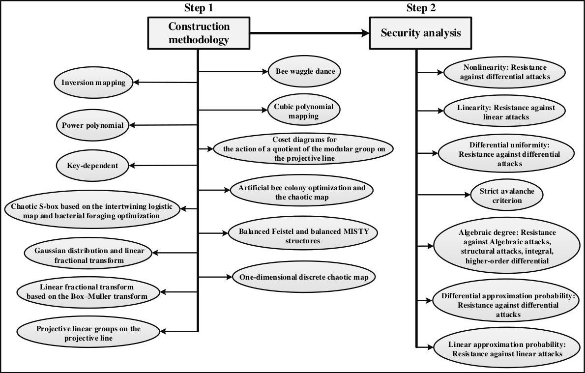
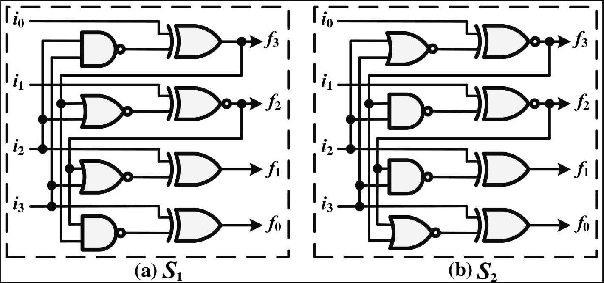
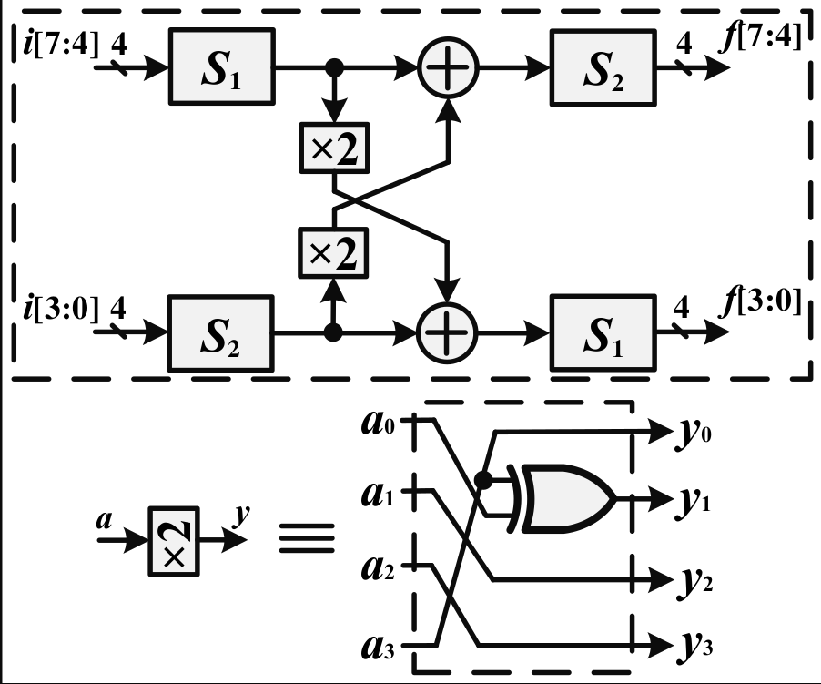
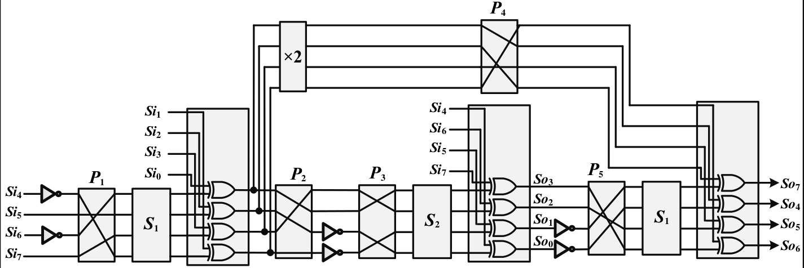

| Lightweight Cryptographic S-Boxes Based on
Efficient Hardware Structures for Block Ciphers |
|
Ayatollah Boroujerdi University,
Department of Electrical Engineering, Ayatollah
Boroujerdi University, Boroujerd, Iran.
|
|
Email: b.rashidi@abru.ac.ir
|
|
|
This paper presents four low-cost substitution boxes (S-boxes),
including two 4-bit S-boxes called \(S_1\) and \(S_2\) and two 8-bit
S-boxes called \(SB_1\) and \(SB_2\), which are suitable for the
development of lightweight block ciphers. The 8-bit \(SB_1\) S-box is
constructed based on four 4-bit S-boxes, multiplication by constant
0x2 in the finite field \(\mathbb{F}_{2^4}\), and field addition
operations. Also, the proposed 8-bit S-box \(SB_2\) is composed of
five permutation blocks, two 4-bit S-boxes \(S_1\) and one 4-bit S-box
\(S_2\), multiplication by constant 0x2, and addition operations in
sequence. The proposed structures of the S-box are simple and
low-cost. These structures have low area and low critical path delay.
The cryptographic strength of the proposed S-boxes is analyzed by
studying the properties of S-box such as nonlinearity, differential
uniformity (DU), strict avalanche criterion (SAC), algebraic degree
(AD), differential approximation probability (DAP), and linear
approximation probability (LAP) in SAGE. The hardware results in 180
nm CMOS technology show the proposed S-boxes are comparable in terms
of security properties, area, delay, and area\(\times\)delay with most
of the famous S-boxes.
Keywords: Substitution Box (S-Box), Block Cipher,
Lightweight, High-Throughput, ASIC
1Introduction
In recent years, cryptographic computations have progressively been
implemented on smaller and smaller devices. Traditional cryptography is
not always precisely well-studied to the needs of this important
subject. Lightweight cryptography, such as lightweight block ciphers,
focuses on addressing this by designing implementable algorithms on
constrained devices. Many lightweight block ciphers have been proposed
to reduce the costs of hardware consumption. Block ciphers are used for
data protection in the cryptosystems as a good candidate for resource
constraints cryptographic applications. In the last few years, several
lightweight block ciphers for hardware implementation of the
cryptosystems have been proposed and widely used for confidentiality.
These cryptographic primitives have been an important area of
cryptographic research [1; 2; 3]. The most common and complex sub-block
in the block ciphers is the substitution box (S-box). This sub-block
takes a \(n\)-bit data in input and returns a \(m\)-bit data at the
output. Most of the block ciphers use the 8-bit S-box that maps an 8-bit
word to another 8-bit data. However, in block ciphers designed for
lightweight applications, S-boxes are commonly 4-bit. The S-boxes have a
direct impact on hardware consumption and the critical path delay of a
block cipher. Therefore, an S-box with an efficient structure is a
crucial sub-block in determining implementation performance.
The focus of this paper is the design of efficient and lightweight
hardware structures for the 8-bit and 4-bit S-boxes. The S-boxes used in
block ciphers must have good cryptographic properties and a low-cost
hardware structure. Therefore, designing an S-box which minimizes the
area consumption and critical path delay is crucial for obtaining
competitive results. The security of proposed S-boxes is analyzed based
on standardized security parameters such as nonlinearity, differential
uniformity (DU), strict avalanche criterion (SAC), algebraic degree
(AD), differential approximation probability (DAP), and linear
approximation probability (LAP) by SAGE [14] and [30]. Also, the
structures' critical path delay and area consumption is achieved in 180
nm CMOS technology. The results show that the proposed structures have
reasonable hardware resources, timing characteristics, and security
properties compared to the other works. The contributions of this paper
are summarized as follows:
-
We use the substitution-permutation network (SPN) and MISTY networks
and select 4-bit S-boxes with a low-cost implementation that provide
good cryptographic properties of the resulting 8-bit S-box.
-
Two 8-bit S-boxes based on 4-bit S-boxes, multiplication by constant
0x2 in the finite field \(\mathbb{F}_{2^4}\), field additions, and
permutation blocks are designed. The 8-bit S-boxes have lower
hardware resources and lower critical path delay (CPD) than those of
other 8-bit S-boxes.
-
Security analysis of the proposed S-boxes shows that the structures
have a reasonable security level compared to the other works.
Therefore, these structures can be used in lightweight block
ciphers.
-
The inverse of the proposed S-boxes have similar structures to the
original S-box structures.
The rest of the paper is organized as follows. Preliminaries and
cryptanalytic properties for S-boxes are presented summarily in Section
3. Section 4 the proposed structures of the
S-box are described. Section 5 shows a comparison between
our works and related works. Finally, the paper is concluded in Section
6.
2Related Works
Several S-boxes have been reported in [5]-[21]. There are many S-box
construction methods in the literature, such as inversion mapping, power
polynomial, heuristic methods, and pseudorandom methods [5]. The
inversion mapping S-box consists of simple algebraic expression, thus
the S-box design is completed by adding an affine transformation before
the input of the S-box, after the output of the S-box, or both to make
the overall S-box description more complex in a finite field. For some
constrained environments, the cost of this approach might be too high.
Therefore, the large area consumed is the main drawback of this method.
The field inversion is complex to perform in \(\mathbb{F}_{2^8}\), so
some researchers use composite field arithmetic to simplify. The main
drawback of the composite field method is greater power consumption, but
the delay is much less compared to the architectures, which are directly
implemented in \(\mathbb{F}_{2^8}\). In [6] a cyclic group \(C_{255}\)
in the formation of proposed S-box is used. In [7] a chaotic S-box based
on the intertwining logistic map and bacterial foraging optimization is
designed. In [8] an S-box using Gaussian distribution and linear
fractional transform is proposed. The S-box is constructed by employing
a linear fractional transform based on the Box-Muller transform,
polarization decision, and central limit algorithm. In [10] a systematic
design methodology to generate a chaotic S-box using a different
distribution table (DDT) is proposed. In [11] a heuristic method called
the bee waggle dance for designing the S-box is presented. In [12] an
innovative scheme of S-box based on the action of projective linear
groups on the projective line, and the permutation triangle groups is
developed. In [12] an S-box based on artificial bee colony optimization
and the chaotic map is proposed. An innovative S-box design using cubic
polynomial mapping is proposed in [12]. The use of cubic polynomial
maintains the simplicity of the S-box construction method. In [17] the
authors focus on S-Boxes corresponding to 3 rounds of a balanced Feistel
and a balanced MISTY structure. These constructions use the keys
(\(k_1\), \(k_2\), \(k_3\)) in their S-boxes, while an S-box is unkeyed.
Therefore, the differential and linear properties of the Feistel and
MISTY structures need to be analyzed in the unkeyed setting. Also, the
main drawback of these structures is the high critical path delay.
Non-involutive and involutive 4-bit S-boxes with optimal bit-slice
representation are present in [18] and [19]. In [20] a 4-bit S-box is
proposed with 11 logic gates and critical path delay equal to \(7
T_X\)+\(4 T_A\), where \(T_A\) and \(T_X\) denote the time delay of a
2-input AND gate and 2-input XOR gate, respectively. In [12] a platform
named PEIGEN is presented to evaluate security, find efficient
software/hardware implementations, and generate cryptographic S-boxes.
The platform is only efficient for 3- and 4-bit S-boxes. The S-box
design in work [12] is based on the searching method. Therefore, for
small S-boxes (e.g., not more than 4 bits), this searching approach
becomes more challenging with large S-boxes (e.g., more than 6-bit),
with the difficulty of too large a search space. For instance, there
exist 256! \(\approx 2^{1684}\) possible permutations in
\(\mathbb{F}_{2^8} \longrightarrow \mathbb{F}_{2^8}\). The
implementation searching tool PEIGEN can find the efficient (not always
the best) implementation of a given S-box within a set of invertible
instructions. The searching method is based on a bi-directional Dijkstra
algorithm. It expands the two subgraphs until the predetermined
expansion limit is reached (or when a proper stopping rule is
satisfied). The expansion limit determines whether the obtained
implementation is the best or not. In [23] a technique that involves
coset diagrams for the action of a quotient of the modular group on the
projective line over the finite field is proposed for constructing the
S-box. It is constructed by selecting vertices of the coset diagram
especially. A beneficial transformation involving the Fibonacci sequence
is also used in selecting the vertices of the coset diagram. In [24] a
method for obtaining random bijective S-boxes based on an improved
one-dimensional discrete chaotic map is presented. The proposed method
uses a particular case of the discrete chaotic map based on the
composition of permutations to overcome the problem with the potentially
short length of the orbits. The particular case is based on the
composition of permutations and sine function and has a more
considerable minimum length of the orbits. Most of the previous methods
[5]-[29] are suitable for software implementation and not efficient for
hardware structure. These S-boxes have a high hardware implementation
cost.
Peigen is aimed to be a platform covering a comprehensive checklist of
design criteria for S-boxes appearing in the literature. Peigen not only
integrates most of the features in existing tools but also equips them
with functionalities to evaluate new security-related properties,
improving the efficiency of the search algorithms for optimized
implementations in several aspects.
3Preliminaries and Cryptanalytic
Properties for S-Boxes
An S-box takes \(m\)-bit number as input and transforms them into
\(n\)-bit number as output, where \(m\) and \(n\) are not necessarily
equal [31]. A \(m \times n\) S-box can be implemented as a lookup table
(LUT) with \(2^m\) words of \(n\) bits. In other words, an S-box is a
nonlinear mapping from the finite field \(\mathbb{F}_{2^n}\) to the
finite field \(\mathbb{F}_2\). An \(n \times m\) S-box can be seen as a
vectorial Boolean function \(F : \mathbb{F}_{2^n} \longrightarrow
\mathbb{F}_{2^m}\). Constructing a substitution box (S-box) has always
been an important research direction in cryptography. In recent years,
many methods of S-box construction have been proposed. In these methods,
the S-boxes are constructed based on the nonlinear functions. The two
main steps of S-box design are shown in Figure 1. The first
step is the construction methodology. In this step, the designers select
or propose the methodology for S-box design. The primary methodologies
in the literature [32] are presented in this figure. In the next step,
we have a security analysis of the S-box (more details are presented in
the following subsections). The three main cryptographic properties of
an S-box are nonlinearity (NL), differential uniformity (DU), and
algebraic degree (AD). A cryptographically strong S-box should exhibit
high NL, low DU, and high AD. To examine the strength of S-boxes,
nonlinearity analysis, strict avalanche criterion, linear approximation
probability analysis, and differential uniformity analysis are used. In
the following, we briefly present the security parameters used for the
security evaluation of S-boxes.
|

|
|
Fig. 1. Main steps of S-box design
|
3.1Nonlinearity
For a cryptographic \(n\)-bit Boolean function \(f\), the nonlinearity
is defined based on the least Hamming distance between the vector
representing the function's truth table and the set of all \(n\)-bit
affine functions. The high minimum Hamming distance is proper to high
nonlinearity. High nonlinearity provides resistance to linear
approximation attacks [33]. The upper bound of nonlinearity is equal to
\(NL (f) = 2^{n - 1} - 2^{n / 2 - 1}\) [34], for an S-box in the finite
field \(\mathbb{F}_{2^n}\). As an 8-bit S-box in \(\mathbb{F}_{2^8}\),
the upper bound of \(NL\) is 120. As the S-box is generally the only
non-linear component in a block cipher, it must be carefully chosen to
ensure a secure design against linear attacks. The nonlinearity of a
boolean function \(f\) is computed as:
\(\displaystyle \begin{array}{rl}
NL (f) & = 2^{n - 1} (1 - 2^{- n}
\max |S_{\langle f \rangle} (w) |) .\\
S_{\langle f \rangle} (w) & =
\sum_{w \in {\text{GF}} (2^n)} (- 1)^{f (x)
\oplus x.w}
.
\end{array}\)
where, \(S_{\langle f \rangle} (w)\) is the Walsh spectrum of function
\(f\) and \(x.w\) denotes the dot-product of \(x\) and \(w\). Also
linearity of a Boolean function \(f\) is defined as
\(\displaystyle L (f) = \max_{a, b \neq 0} | S_{\langle f \rangle} (w) |
.\)
The smaller \(L (f)\), the stronger the S-box against linear attacks. It
is well-known that for any function \(f\) over finite field
\(\mathbb{F}_{2^n}\) to \(\mathbb{F}_{2^n}\) it keeps that \(L (f) \geq
2^{(n + 1) / 2}\) [35]. Functions that have this bound are called Almost
Bent (AB) functions. However, in the case of \(n > 4\) and \(n\) even,
we do not know the minimum linearity value that can be achieved [36].
For example, the best linearity value is achieved by the AES S-box with
\(L (f)\)=32 for the case \(n\)=8.
3.2Differential Uniformity (DU)
Differential uniformity (DU) of \(n\)-bit S-box \(f\) is defined as:
\(\displaystyle DU (F) = \max_{ I, Y \in \mathbb{F}_{2^n}, I \neq 0}
\left| \left\{ x \in
\mathbb{F}_{2^n} : f (x + I) + f (x) = Y \right\}
\right| .\)
where, \(x\) is the set of all possible input values of S-box, \(I\) is
input differential and \(Y\) is output differential. The largest value
in the difference distribution table (after omitting the trivial entry
case, \(I = Y = 0\)) is the value of DU for an S-box. To resist
differential cryptanalysis and evaluate the differential property of an
S-box, we use the parameter DU [37]. The value of DU must be kept as
small as possible.
3.3Strict Avalanche Criterion (SAC)
The work [38] introduces an efficient method of Strict avalanche
criterion (SAC) to test the performance of an S-box. Perfect
nonlinearity implies an earlier design criterion for S-boxes: the strict
avalanche criterion (SAC). SAC is essentially a diffusion criterion
[12]. If S-box satisfies this criterion, a change (compliment of a bit)
in one of the input bits must lead to a change in half of the output
bits. In other words, when SAC is satisfied, a slight change in the
input bits leads to a significant difference in the output bits. The
acceptable quantified SAC is equal to 0.5. If an S-box has a SAC value
close to 0.5, it ensures that it has a good bound of nonlinearity.
3.4Algebraic Degree (AD)
A \(n\)-bit Boolean function \(f\) can be represented as a multivariate
polynomial over the field \(\mathbb{F}_2\), known as its Algebraic
Normal Form (ANF), as follows:
\(\displaystyle \begin{array}{rl}
f (x_1, \ldots, x_n) & = a_0 + a_1
\cdot x_1 + \cdots + a_{1, 2} \cdot x_1
\cdot x_2 + \cdots + a_{1, 2,
\ldots, n} x_1 \cdot x_2 \cdots x_n\\
& = \sum_{I \subseteq \{1,
\ldots, n\}} a_I \prod_{i \in I} x_i .
\end{array}\)
where the coefficients \(a_0\), \(a_1, \ldots, a_n\), \(a_{1, 2},
\ldots, a_{1, \ldots, n}\) \(\in F_2\). The number of variables in the
largest monomial of the ANF is known as the algebraic degree (AD),
deg(\(f\)). For an n-bit S-box \(f\), there are \(n\) component
functions \(f_i\), \(1 \leq i \leq n\). The algebraic degree is
determined by the maximum degree between all component functions:
\(\displaystyle AD (f) = \max \{ \deg (f_1), \deg (f_2), \ldots, \deg
(f_n) \} .\)
The algebraic degree is considered a good security factor against
structural attacks, such as integral and higher-order differential. To
resist against higher-order differential cryptanalysis [39] the
preferable value of algebraic degree must be in the bound of AD\((f)
\geq 4\) [40].
3.5Differential Approximation Probability
(DAP)
The differential approximation probability (DAP) can reflect the XOR
distribution of the input and output of the Boolean function [41]. Let
us denote the input and output differentials by \(I\) and \(Y\),
respectively. The differential approximation probability is calculated
as follows [41]:
\(\displaystyle DAP (f) = \max_{ I \neq 0, Y} \frac{\# \left\{ x \in
X|f (x) + f (x + M_x) =
Y \right\}}{2^n}\)
Where \(X\) denotes the set of all possible inputs, and the \(M_x\)
denotes the input of a randomly selected mask. Differential
approximation probability returns the difference with the highest chance
between 0 and 1. The smaller the DAP is, the stronger the S-box's
ability to resist differential cryptanalysis attacks is.
3.6Linear Approximation Probability (LAP)
The imbalance of an event is examined in this analysis. Let us denote
the input and output of randomly selected masks by \(M_x\) and \(M_y\),
respectively. In the following, we used the definition as given in [33]
for maximum linear approximation probability (LAP) calculation:
\(\displaystyle LAP (f) = \max_{M_x, M_y \neq 0} \left| \frac{\{ x \in
X|x.M_x = f (x) \cdot
M_y \}}{2^n} - \frac{1}{2} \right|\)
Where \(X\) denotes the set of all possible inputs. The smaller the LAP
is, the stronger the S-box's resistance against linear cryptanalysis
attacks is, and vice versa.
4Proposed Structures of the
S-Box
One of the essential components in many block ciphers is the
substitution box or S-box. Therefore, the central part of the
implementation cost (area and critical path delay) depends on the S-box
layer. Designing an S-box which minimizes the area and timing
characteristic is crucial for obtaining optimal results. This section
presents four S-boxes consisting of two 4-bit S-boxes and two 8-bit
S-boxes. The proposed structures are simple and low-cost. In the case of
a 4-bit S-box, we have very compact structures. This paper focuses on
constructing 8-bit S-boxes using two smaller 4-bit S-boxes and linear
operations. In this case, the implementation of S-boxes requires fewer
hardware resources.
4.1Proposed Hardware Structures of 4-bit
S-Boxes
This paper presents two 4-bit S-boxes with similar structures called
\(S_1\) and \(S_2\). If (\(i_0\), \(i_1\), \(i_2\), and \(i_3\)) and
(\(f_0\), \(f_1\), \(f_2\), and \(f_3\)) represent the four input and
output bits of the S-box (\(i_0\) and \(f_0\) being the least
significant bits), respectively. The proposed computations of the
\(S_1\) S-box are equal to
\(\displaystyle f_3 = i_0 \oplus (i_2 .i_3)', \quad f_2 = i_1 \odot (f_3
+ i_2)', \quad f_1 =
i_2 \oplus (f_2 + i_3)', \quad \text{and } \quad
f_0 = i_3 \oplus (f_2 .f_3)'
.\)
For the inverse of this S-box \(S_1^{- 1}\) we have:
\(\displaystyle i_3 = f_0 \oplus (f_2 .f_3)', \quad i_2 = f_1 \oplus
(f_2 + i_3)', \quad i_1 =
f_2 \odot (f_3 + i_2)', \quad \text{and }
\quad i_0 = f_3 \oplus (i_2 .i_3)' .\)
Also, for \(S_2\) S-box we have
\(\displaystyle f_3 = i_0 \odot (i_2 + i_3)', \quad f_2 = i_1 \odot (f_3
.i_2)', \quad f_1 =
i_2 \oplus (f_2 .i_3)', \quad \text{and } \quad f_0
= i_3 \oplus (f_2 + f_3)'
.\)
The inverse of this S-box \(S_2^{- 1}\) is computed as follows:
\(\displaystyle i_3 = f_0 \oplus (f_2 + f_3)', \quad i_2 = f_1 \oplus
(i_3 .f_2)', \quad i_1 =
f_2 \odot (f_2 .f_3)', \quad \text{and } \quad
i_0 = f_3 \odot (i_2 + i_3)' .\)
The operators \(\oplus\), \(\odot\), \(+\), and \(\cdot\) are equal to
XOR, XNOR, OR, and AND logic gates, respectively. The values of these
S-boxes in hexadecimal notation are given by Table 1.
| \(i\) |
0 |
1 |
2 |
3 |
4 |
5 |
6 |
7 |
8 |
9 |
a |
b |
c |
d |
e |
f |
| \(S_1 (i)\) |
c |
3 |
b |
5 |
e |
7 |
9 |
1 |
d |
0 |
8 |
4 |
6 |
f |
2 |
a |
| \(S_2 (i)\) |
3 |
a |
6 |
e |
c |
1 |
8 |
4 |
b |
2 |
d |
5 |
f |
0 |
9 |
7 |
|
|
Table 1. The values of four 4-bit S-boxes
\(S_1\) and \(S_2\)
|
4.1.1Difference Distribution Table of the
Proposed 4-bit S-Boxes
Consider a system with input \(I = [I_1, I_2, \ldots, I_n]\) and output
\(Y = [Y_1, Y_2, \ldots, Y_n]\). Let two inputs to the system be \(X'\)
and \(X''\) with the corresponding outputs \(Y'\) and \(Y''\),
respectively. The input difference and output difference are given by
\(I = I' \oplus I''\) and \(Y = Y' \oplus Y''\), respectively, where
\(\oplus\) represents a bit-wise exclusive-OR of the \(n\)-bit vectors
and, so, \(I = [ I_1, I_2, \ldots, I_n]\), \(Y = [ Y_1, Y_2, \ldots, Y_n]\) where \(I_i = I'_i
\oplus I''_i\), and \(I_i'\) and \(I_i''\) representing the \(i^{th}\)
bit of \(I'\) and \(I''\), respectively. The probability that a
particular output difference \(Y\) occurs given a specific input
difference \(I\) is \(1 / 2^n\) where \(n\) is the number of bits of
\(I\). Differential cryptanalysis explores a scenario where a particular
\(Y\) occurs with a very high probability given a particular input
difference \(I\).
The difference distribution table for the \(S_1\) S-box is given in
Table 2. The table's first column and row show input
(\(I\)) and output difference (\(Y\)) values. Each table element
represents the number of occurrences of the corresponding output
difference \(Y\) value given the input difference \(I\). The largest
value in the table is 4, for example corresponding to \(I = 5\) and \(Y
= 2\), we have one 4 value. Therefore, the probability that \(Y = 2\)
given an arbitrary pair of input values that satisfy \(I = 5\) is \(4 /
16\). The smallest value in the table is 0 and occurs for many different
pairs. In this case, the probability of the \(Y\) value occurring given
the \(I\) value is 0.
The largest value in the difference distribution table (after omitting
the trivial entry case, \(I = Y = 0\)) is the value of DU for an S-box.
The value of DU must be kept as small as possible to resist differential
cryptanalysis. Based on the difference distribution table values, the
proposed 4-bit S-boxes have a low probability of a particular \(Y\)
occurring given a specific input difference \(I\).
|
0 |
1 |
2 |
3 |
4 |
5 |
6 |
7 |
8 |
9 |
a |
b |
c |
d |
e |
f |
| 0 |
16 |
0 |
0 |
0 |
0 |
0 |
0 |
0 |
0 |
0 |
0 |
0 |
0 |
0 |
0 |
0 |
| 1 |
0 |
0 |
0 |
0 |
0 |
0 |
0 |
0 |
4 |
4 |
0 |
0 |
2 |
2 |
2 |
2 |
| 2 |
0 |
0 |
0 |
0 |
4 |
4 |
4 |
4 |
0 |
0 |
0 |
0 |
0 |
0 |
0 |
0 |
| 3 |
0 |
0 |
0 |
0 |
0 |
0 |
0 |
0 |
4 |
4 |
0 |
0 |
2 |
2 |
2 |
2 |
| 4 |
0 |
0 |
4 |
0 |
4 |
0 |
0 |
0 |
0 |
0 |
2 |
2 |
0 |
0 |
2 |
2 |
| 5 |
0 |
0 |
4 |
0 |
0 |
0 |
4 |
0 |
0 |
0 |
2 |
2 |
2 |
2 |
0 |
0 |
| 6 |
0 |
0 |
4 |
0 |
0 |
4 |
0 |
0 |
0 |
0 |
2 |
2 |
0 |
0 |
2 |
2 |
| 7 |
0 |
0 |
4 |
0 |
0 |
0 |
0 |
4 |
0 |
0 |
2 |
2 |
2 |
2 |
0 |
0 |
| 8 |
0 |
4 |
0 |
4 |
0 |
0 |
0 |
0 |
4 |
0 |
0 |
4 |
0 |
0 |
0 |
0 |
| 9 |
0 |
4 |
0 |
4 |
0 |
0 |
0 |
0 |
0 |
0 |
0 |
0 |
2 |
2 |
2 |
2 |
| a |
0 |
0 |
0 |
0 |
2 |
2 |
2 |
2 |
0 |
0 |
0 |
0 |
2 |
2 |
2 |
2 |
| b |
0 |
0 |
0 |
0 |
2 |
2 |
2 |
2 |
4 |
0 |
0 |
4 |
0 |
0 |
0 |
0 |
| c |
0 |
2 |
0 |
2 |
0 |
2 |
0 |
2 |
0 |
2 |
2 |
0 |
2 |
0 |
0 |
2 |
| d |
0 |
2 |
0 |
2 |
0 |
2 |
0 |
2 |
0 |
2 |
2 |
0 |
0 |
2 |
2 |
0 |
| e |
0 |
2 |
0 |
2 |
2 |
0 |
2 |
0 |
0 |
2 |
2 |
0 |
0 |
2 |
2 |
0 |
| f |
0 |
2 |
0 |
2 |
2 |
0 |
2 |
0 |
0 |
2 |
2 |
0 |
2 |
0 |
0 |
2 |
|
|
Table 2. The difference distribution table for
the \(S_1\) S-box
|
Figure 2 (a) and (b) show the proposed structures of 4-bit
\(S_1\) and \(S_2\) S-boxes, respectively. As seen from the figures, the
\(S_1\) and \(S_2\) S-boxes can be implemented with (three XOR, one
XNOR, two NAND, and two AND operations) and (two XOR, two XNOR, two
NAND, and two AND operations), respectively. The constructions are
simple and low-cost for hardware implementation. Table 3
shows the hardware results of the proposed structures of 4-bit S-boxes
and other related works. The table shows that the proposed 4-bit S-boxes
have reasonable hardware resources and timing characteristics compared
to other 4-bit S-boxes. The area and critical path delay of \(S_1\) and
\(S_2\) S-boxes when directly synthesizing the equations using Synopsys
Design Compiler tool based on the library of standard cells with 180 nm
CMOS technology are equal to (14 GEs and 0.543 ns) and (14 GEs and 0.539
ns), respectively. In [12] for 4-bit S-boxes, they perform the S-box
generator with different sets of criteria (CriteriaSet0 to
CriteriaSet5). The area consumed on 180 nm technology for 4-bit S-boxes
CriteriaSet0, CriteriaSet1, CriteriaSet2, CriteriaSet3, CriteriaSet4,
and CriteriaSet5 are equal to \(12 \sim 14.34\) GEs, \(18 \sim 20.01\)
GEs, \(15.33 \sim 18.67\) GEs, \(16.33 \sim 21.34\) GEs, \(20 \sim 21\)
GEs, and \(18 \sim 19.34\) GEs, respectively. The proposed 4-bit S-boxes
have a lower area than that of the 4-bit S-boxes of CriteriaSet1 to
CriteriaSet5 in [12]. The PEIGEN tool in [12] is only efficient for 3-
and 4-bit S-boxes. It is said to be in its embryonic stage because, for
larger S-boxes (\(\geq\) 5-bit), it is satisfactory only for evaluating
security but not yet powerful enough for implementing and generating
strong S-boxes.
|

|
|
Fig. 2. The proposed structure of 4-bit
S-boxes \(S_1\) (a) and \(S_2\) (b)
|
|
# AND |
# NAND |
# XOR |
|
| Works |
(or OR) |
(or NOR) |
(or XNOR) |
CPD |
| [42], \(SS_0\) |
26 |
— |
3 |
\(T_A\)+\(T_X\)+\(2 T_O\) |
| [42], \(SS_1\) |
31 |
— |
1 |
\(3 T_A\)+\(2 T_O\) |
| [42], \(SS_2\) |
34 |
— |
1 |
\(2 T_A\)+\(3 T_O\) |
| [42], \(SS_3\) |
36 |
— |
1 |
\(3 T_A\)+\(2 T_O\) |
| [42] |
— |
4 |
4 |
\(2 T_X\)+\(2 T_{NO}\) |
| [44] |
— |
4 |
4 |
\(2 T_X\)+\(2 T_{NO}\) |
| [45] |
20 |
— |
7 |
\(T_X\)+\(T_A\)+\(2 T_O\) |
| [18] |
4 |
— |
4 |
\(2 T_X\)+\(T_A\)+\(T_O\) |
| [19] |
4 |
— |
4 |
\(4 T_X\)+\(4 T_A\) |
| [20] |
4 |
— |
7 |
\(7 T_X\)+\(4 T_A\) |
| TW \(S_1\) |
\(\cdots\) |
4 |
4 |
\(T_{NA}\)+\(2 T_X\)+\(T_{XN}\)+\(2 T_{NO}\) |
| TW \(S_2\) |
\(\cdots\) |
4 |
4 |
\(T_{NA}\)+\(T_X\)+\(2 T_{XN}\)+\(2 T_{NO}\) |
|
|
Table 3. Hardware results of the proposed
structures of 4-bit S-boxes and other related works. TW: This
work; \(T_A\), \(T_{NA}\), \(T_X\), \(T_{XN}\), \(T_O\),
\(T_{NO}\), \(T_M\) denote the time delay of a 2-input AND gate,
2-input NAND gate, 2-input XOR gate, 2-input XNOR gate, 2-input
OR gate, and 2-input NOR gate, respectively.
|
Nonlinearity, linearity, differential uniformity, algebraic degree,
differential approximation probability, linear approximation
probability, and strict avalanche criterion of the two S-boxes are equal
to 4, 8, 4, 3, 0.25, 0.25, and 0.51, respectively. These security
analysis results are equal to the results of the famous 4-bit S-boxes
used in the block ciphers such as PRESENT, PICCOLO, and CLEFIA. From the
hardware point of view, the proposed structures and two works [43] and
[44] are almost similar. But the main difference is for the important
parameter SAC. The SAC for the proposed structures \(S_1\), \(S_2\),
[43], and [44], are equal to 0.4063, 0.4141, 0.3906, and 0.3906,
respectively. As mentioned before, the acceptable quantified SAC is
equal to 0.5. If an S-box has a SAC value close to 0.5, it ensures that
it has a good bound of nonlinearity.
4.2Proposed Hardware Structure of the 8-bit
S-Boxes
In this subsection, we present the proposed 8-bit S-boxes called
\(SB_1\) and \(SB_2\). These S-boxes are constructed based on the
proposed 4-bit S-boxes (\(S_1\), \(S_2\)), multiplication by 2 in the
finite field \(\mathbb{F}_{2^4}\), bit-wise XOR, and permutation
operations.
4.2.1SB\(1\)
The proposed structure of 8-bit S-box \(SB_1\) is shown in Figure 3. The proposed S-box \(SB_1\) is constructed based on a
2-round substitution-permutation network (SPN) structure with bit
permutation, two addition, two multiplication by 2, and the small 4-bit
S-boxes \(S_1\) and \(S_2\). This S-box is similar to the \(S_0\) S-box
in the CLAFIA block cipher []. Let \(i [7 : 0]\) represent the 8-bit
input of the S-box (\(i_7\) being the most significant bit); this block
is constructed based on the four 4-bit S-boxes \(S_1\) and \(S_2\) as
the following computations:
\(\displaystyle \begin{array}{rlll}
g_0 [3 : 0] & \leftarrow S_1 (i
[7 : 4]), & g_1 [3 : 0] & \leftarrow S_2
(i [3 : 0]),\\
h_0 [3 : 0]
& \leftarrow g_0 [3 : 0] \oplus 0 x 2 \times g_1 [3 : 0], & h_1
[3 :
0] & \leftarrow g_1 [3 : 0] \oplus 0 x 2 \times g_0 [3 : 0],\\
f [7 :
4] & \leftarrow S_2 (h_0 [3 : 0]), & f [3 : 0] & \leftarrow S_1 (h_1
[3 : 0])
\end{array}\)
The inverse of this S-box \(SB_1^{- 1}\) is computed as follows:
\(\displaystyle \begin{array}{rlll}
h_0 [3 : 0] & \leftarrow S_2^{- 1}
(f [7 : 4]), & h_1 [3 : 0] & \leftarrow
S_1^{- 1} (f [3 : 0]),\\
g_0
[3 : 0] & \leftarrow h_0 [3 : 0] \oplus 0 x 2 \times g_1 [3 : 0], & g_1
[3 : 0] & \leftarrow h_1 [3 : 0] \oplus 0 x 2 \times g_0 [3 : 0],\\
i
[7 : 4] & \leftarrow S_1^{- 1} (g_0 [3 : 0]), & i [3 : 0] & \leftarrow
S_2^{- 1} (g_1 [3 : 0]) .
\end{array}\)
The multiplication by 0x2 in terms 0x2\(g_0\) and 0x2\(g_1\) is
performed in field \(\mathbb{F}_{2^4}\) constructed by the primitive
polynomial \(f_2 (z) = z^4 + z + 1\). The structure of multiplication by
0x2 in the field \(\mathbb{F}_{2^4}\) is shown in Figure 3.
The S-box is constructed by using four low-cost \(S_1\) and \(S_2\)
S-boxes, two field additions, and two multiplications by constant 0x2
over the field \(\mathbb{F}_{2^4}\). The computations of S-box \(SB_1\)
are as follows:
\(\displaystyle \begin{array}{rlll}
& \underrightarrow{S_1} \left\{
\begin{array}{l}
T_{1, 3} = i_4 \oplus (i_6 .i_7)'\\
T_{1, 2} =
i_5 \odot (T_{1, 3} + i_6)'\\
T_{1, 1} = i_6 \oplus (T_{1, 2} +
i_7)'\\
T_{1, 0} = i_7 \oplus (T_{1, 2} .T_{1, 3})'
\end{array}
\right. & & \underrightarrow{S_2} \left\{ \begin{array}{l}
T_{2, 3}
= i_0 \odot (i_2 + i_3)'\\
T_{2, 2} = i_1 \odot (T_{2, 3} .i_2)'\\
T_{2, 1} = i_2 \oplus (T_{2, 2} .i_3)'\\
T_{2, 0} = i_3 \oplus
(T_{2, 2} + T_{2, 3})'
\end{array} \right.\\
&
\underrightarrow{\times 2} \left\{ \begin{array}{l}
T_{3, 3} = T_{1,
2}\\
T_{3, 2} = T_{1, 1}\\
T_{3, 1} = T_{1, 0} \oplus T_{1,
3}\\
T_{3, 0} = T_{1, 3}
\end{array} \right. & &
\underrightarrow{\times 2} \left\{ \begin{array}{l}
T_{4, 3} = T_{2,
2}\\
T_{4, 2} = T_{2, 1}\\
T_{4, 1} = T_{2, 0} \oplus T_{2,
3}\\
T_{4, 0} = T_{2, 3}
\end{array} \right.\\
&
\underrightarrow{Add} \left\{ \begin{array}{l}
T_{5, 3} = T_{2, 3}
\oplus T_{3, 3}\\
T_{5, 2} = T_{2, 2} \oplus T_{3, 2}\\
T_{5, 1}
= T_{2, 1} \oplus T_{3, 1}\\
T_{5, 0} = T_{2, 0} \oplus T_{3, 0}
\end{array} \right. & & \underrightarrow{Add} \left\{ \begin{array}{l}
T_{6, 3} = T_{1, 3} \oplus T_{4, 3}\\
T_{6, 2} = T_{1, 2} \oplus
T_{4, 2}\\
T_{6, 1} = T_{1, 1} \oplus T_{4, 1}\\
T_{6, 0} =
T_{1, 0} \oplus T_{4, 0}
\end{array} \right.\\
&
\underrightarrow{S_2} \left\{ \begin{array}{l}
f_7 = T_{6, 0} \odot
(T_{6, 2} + T_{6, 3})'\\
f_6 = T_{6, 1} \odot (f_7 .T_{6, 2})'\\
f_5 = T_{6, 2} \oplus (f_6 .T_{6, 3})'\\
f_4 = T_{6, 3} \oplus (f_6
+ f_7)'
\end{array} \right. & & \underrightarrow{S_1} \left\{
\begin{array}{l}
f_3 = T_{5, 0} \oplus (T_{5, 2} .T_{5, 3})'\\
f_2 = T_{5, 1} \odot (f_3 + T_{5, 2})'\\
f_1 = T_{5, 2} \oplus (f_2
+ T_{5, 3})'\\
f_0 = T_{5, 3} \oplus (f_2 .f_3)'
\end{array}
\right.
\end{array}\)
In these equations \(i_0\) to \(i_7\), \(f_0\) to \(f_7\) and \(T_{m,
n}\), where \(1 \leq m \leq 6, 0 \leq n \leq 3\), are used for denote of
the input, output and intermediate variables, respectively. The critical
path delay of S-box in the proposed structure is equal to \(T_{S 1} +
T_{S 2} + 2 T_X\), where \(T_{S 1}\), \(T_{S 2}\), and \(T_X\) are time
delay of the 4-bit \(S_1\) S-box, 4-bit \(S_2\) S-box, and the 2-input
XOR gate, respectively. The values of proposed 8-bit S-box \(SB_1\) are
presented in Table 4.
|

|
|
Fig. 3. The structure of 8-bit S-box \(SB_1\)
|
|
0 |
1 |
2 |
3 |
4 |
5 |
6 |
7 |
8 |
9 |
a |
b |
c |
d |
e |
f |
| 0 |
dd |
53 |
3f |
e7 |
41 |
98 |
75 |
ca |
2c |
b0 |
19 |
82 |
ae |
f4 |
0b |
66 |
| 1 |
17 |
c6 |
7c |
fd |
b8 |
a1 |
32 |
5b |
8f |
4e |
d4 |
25 |
90 |
e9 |
6a |
03 |
| 2 |
09 |
fa |
45 |
c4 |
30 |
2e |
bf |
e3 |
92 |
71 |
6d |
ac |
88 |
57 |
d6 |
1b |
| 3 |
e0 |
6c |
26 |
de |
99 |
44 |
8b |
02 |
33 |
ad |
f1 |
7a |
b7 |
18 |
c5 |
5f |
| 4 |
b6 |
27 |
60 |
a3 |
15 |
f2 |
01 |
84 |
5e |
df |
4b |
c8 |
ec |
9a |
79 |
3d |
| 5 |
af |
3e |
5d |
bc |
fb |
1a |
c9 |
78 |
67 |
e6 |
95 |
04 |
d3 |
42 |
81 |
20 |
| 6 |
7b |
94 |
11 |
8a |
6f |
5c |
d0 |
a7 |
f8 |
05 |
36 |
ee |
c2 |
23 |
bd |
49 |
| 7 |
43 |
8d |
0e |
96 |
d2 |
e5 |
68 |
29 |
c0 |
1c |
ba |
51 |
ff |
ab |
34 |
77 |
| 8 |
58 |
d5 |
aa |
61 |
87 |
7d |
93 |
1f |
bb |
24 |
ce |
46 |
39 |
00 |
fc |
e2 |
| 9 |
85 |
48 |
f9 |
72 |
56 |
63 |
ed |
be |
14 |
cb |
2f |
d7 |
0a |
3c |
a0 |
91 |
| a |
9c |
70 |
c7 |
4f |
ea |
db |
54 |
31 |
0d |
f3 |
a2 |
69 |
16 |
b5 |
28 |
8e |
| b |
64 |
eb |
b2 |
59 |
7e |
80 |
4c |
f6 |
a5 |
38 |
07 |
9f |
21 |
cd |
13 |
da |
| c |
3a |
a9 |
d8 |
2b |
0c |
cf |
1e |
9d |
e1 |
62 |
73 |
f0 |
55 |
86 |
47 |
b4 |
| d |
22 |
b1 |
e4 |
35 |
c3 |
06 |
f7 |
40 |
d9 |
5a |
8c |
1d |
6b |
7f |
9e |
a8 |
| e |
c1 |
12 |
9b |
08 |
2d |
37 |
a6 |
dc |
4a |
89 |
50 |
b3 |
74 |
6e |
ef |
f5 |
| f |
fe |
0f |
83 |
10 |
a4 |
b9 |
2a |
65 |
76 |
97 |
e8 |
3b |
4d |
d1 |
52 |
cc |
|
|
Table 4. The values of proposed 8-bit S-box
\(SB_1\)
|
4.2.2SB\(2\)
The proposed S-box \(SB_2\) is similar to the MISTY construction, which
is a construction to build an 8-bit S-box from smaller 4-bit functions
(such as 4-bit S-boxes, 4-bit permutations, etc.). We here focus on
constructions with a 3-round network. It is a good candidate for
constructing large S-boxes from smaller ones at a reasonable
implementation cost. Therefore, constructing an 8-bit S-box from smaller
ones can reduce the implementation cost. The proposed 8-bit S-box
\(SB_2\) is composed of five permutation blocks, two 4-bit S-boxes
\(S_1\) and one 4-bit S-box \(S_2\), multiplication by constant 0x2, and
addition operations in sequence. The proposed structure of 8-bit S-box
\(SB_2\) is shown in Figure 4. In this S-box, we have five
permutation blocks called \(P_1\), \(P_2\), \(P_3\), \(P_4\), and
\(P_5\) which are as presented as follows:
\(\displaystyle \begin{array}{rlllllll}
P_{o 1} [0] & = P_{i 1} [3], &
P_{o 1} [1] & = P_{i 1} [0], & P_{o 1} [2] &
= P_{i 1} [2], & P_{o 1}
[3] & = P_{i 1} [1]\\
P_{o 2} [0] & = P_{i 2} [0], & P_{o 2} [1] & =
P_{i 2} [2], & P_{o 2} [2] &
= P_{i 2} [3], & P_{o 2} [3] & = P_{i 2}
[1]\\
P_{o 3} [0] & = P_{i 3} [1], & P_{o 3} [1] & = P_{i 3} [0], &
P_{o 3} [2] &
= P_{i 3} [3], & P_{o 3} [3] & = P_{i 3} [2]\\
P_{o 4}
[0] & = P_{i 4} [2], & P_{o 4} [1] & = P_{i 4} [1], & P_{o 4} [2] &
=
P_{i 4} [3], & P_{o 4} [3] & = P_{i 4} [0]\\
P_{o 5} [0] & = P_{i 5}
[3], & P_{o 5} [1] & = P_{i 5} [2], & P_{o 5} [2] &
= P_{i 5} [0], &
P_{o 5} [3] & = P_{i 5} [1]
\end{array}\)
Where the \(P_{oj}\), \(P_{ij}\), \(1 \leq j \leq 5\), are the inputs
and outputs of five permutations, respectively. The computations of
S-box \(SB_2\) are as follows:
\(\displaystyle \begin{array}{rlll}
& \underrightarrow{NOT} \left\{
\begin{array}{l}
T_{1, 3} = Si_4'\\
T_{1, 2} = Si_5\\
T_{1,
1} = Si_6'\\
T_{1, 0} = Si_7
\end{array} \right. &
\underrightarrow{P_1} \left\{ \begin{array}{l}
T_{2, 3} = T_{1,
1}\\
T_{2, 2} = T_{1, 2}\\
T_{2, 1} = T_{1, 0}\\
T_{2, 0} =
T_{1, 3}
\end{array} \right. & \underrightarrow{S_1} \left\{
\begin{array}{l}
T_{3, 3} = T_{2, 0} \oplus (T_{2, 2} .T_{2, 3})'\\
T_{3, 2} = T_{2, 1} \odot (T_{3, 3} + T_{2, 2})'\\
T_{3, 1} =
T_{2, 2} \oplus (T_{3, 2} + T_{2, 3})'\\
T_{3, 0} = T_{2, 3} \oplus
(T_{3, 2} .T_{3, 3})'
\end{array} \right.\\
& \underrightarrow{Add}
\left\{ \begin{array}{l}
T_{4, 3} = T_{3, 3} \oplus Si_0\\
T_{4,
2} = T_{3, 2} \oplus Si_2\\
T_{4, 1} = T_{3, 1} \oplus Si_3\\
T_{4, 0} = T_{3, 0} \oplus Si_1
\end{array} \right. &
\underrightarrow{P_2} \left\{ \begin{array}{l}
T_{5, 3} = T_{4,
1}\\
T_{5, 2} = T_{4, 3}\\
T_{5, 1} = T_{4, 2}\\
T_{5, 0} =
T_{4, 0}
\end{array} \right. & \underrightarrow{\times 2} \left\{
\begin{array}{l}
T_{6, 3} = T_{4, 2}\\
T_{6, 2} = T_{4, 1}\\
T_{6, 1} = T_{4, 0} \oplus T_{4, 3}\\
T_{6, 0} = T_{4, 3}
\end{array} \right. \hspace{-0.2cm}\\
& \underrightarrow{NOT} \left\{
\begin{array}{l}
T_{7, 3} = T_{5, 3}\\
T_{7, 2} = T_{5, 2}\\
T_{7, 1} = T_{5, 1}'\\
T_{7, 0} = T_{5, 0}'
\end{array} \right. &
\underrightarrow{P_3} \left\{ \begin{array}{l}
T_{8, 3} = T_{7,
2}\\
T_{8, 2} = T_{7, 3}\\
T_{8, 1} = T_{7, 0}\\
T_{8, 0} =
T_{7, 1}
\end{array} \right. & \underrightarrow{S_2} \left\{
\begin{array}{l}
T_{9, 3} = T_{8, 0} \odot (T_{8, 2} + T_{8, 3})'\\
T_{9, 2} = T_{8, 1} \odot (T_{9, 3} .T_{8, 2})'\\
T_{9, 1} =
T_{8, 2} \oplus (T_{9, 2} .T_{8, 3})'\\
T_{9, 0} = T_{8, 3} \oplus
(T_{9, 2} + T_{9, 3})'
\end{array} \right.\\
& \underrightarrow{Add}
\left\{ \begin{array}{l}
So_3 = T_{9, 3} \oplus Si_7\\
So_2 =
T_{9, 2} \oplus Si_6\\
So_1 = T_{9, 1} \oplus Si_5\\
So_0 =
T_{9, 0} \oplus Si_4
\end{array} \right. & \underrightarrow{NOT}
\left\{ \begin{array}{l}
T_{10, 3} = So_3\\
T_{10, 2} = So_2\\
T_{10, 1} = So_1'\\
T_{10, 0} = So_0'
\end{array} \right. &
\underrightarrow{P_4} \left\{ \begin{array}{l}
T_{11, 3} = T_{6,
0}\\
T_{11, 2} = T_{6, 3}\\
T_{11, 1} = T_{6, 1}\\
T_{11, 0}
= T_{6, 2}
\end{array} \right.
\end{array}\)
\(\displaystyle \begin{array}{rlll}
& \underrightarrow{P_5} \left\{
\begin{array}{l}
T_{12, 3} = T_{10, 1}\\
T_{12, 2} = T_{10,
0}\\
T_{12, 1} = T_{10, 2}\\
T_{12, 0} = T_{10, 3}
\end{array}
\right. & \underrightarrow{S_1} \left\{ \begin{array}{l}
T_{13, 3} =
T_{12, 0} \oplus (T_{12, 2} .T_{12, 3})'\\
T_{13, 2} = T_{12, 1}
\odot (T_{13, 3} + T_{12, 2})'\\
T_{13, 1} = T_{12, 2} \oplus
(T_{13, 2} + T_{12, 3})'\\
T_{13, 0} = T_{12, 3} \oplus (T_{13, 2}
.T_{13, 3})'
\end{array} \right. & \underrightarrow{Add} \left\{
\begin{array}{l}
So_7 = T_{11, 0} \oplus T_{13, 3}\\
So_4 =
T_{11, 2} \oplus T_{13, 2}\\
So_5 = T_{11, 1} \oplus T_{13, 1}\\
So_6 = T_{11, 3} \oplus T_{13, 0} .
\end{array} \right.
\end{array}\)
The input, output and intermediate variables are denoted by \(S_{i 0}\)
to \(S_{i 7}\), \(S_{o 0}\) to \(S_{o 7}\) and \(T_{d 1, d 2}\), where
\(1 \leq d 1 \leq 13, 0 \leq d 2 \leq 3\), respectively. As seen in
Figure 4, the proposed S-box is constructed using only
logic gates with a low-cost structure. The critical path delay of S-box
in the proposed structure is reduced to \(T_{S 1} + T_{S 2} + 5 T_X +
T_{XN} + 2 T_{NO} + 3 T_N\), where \(T_{S 1}\), \(T_{S 2}\), \(T_X\),
\(T_{XN}\), \(T_{NO}\) and \(T_N\) are time delay of the 4-bit S-box
\(S_1\), 4-bit S-box \(S_2\), 2-input XOR gate, 2-input XNOR gate,
2-input NOR gate, and Not gate, respectively. The action of the proposed
8-bit S-box \(SB_2\) in hexadecimal notation is given by Table 5.
|

|
|
Fig. 4. The structure of 8-bit S-box \(SB_2\)
|
|
0 |
1 |
2 |
3 |
4 |
5 |
6 |
7 |
8 |
9 |
a |
b |
c |
d |
e |
f |
| 0 |
3f |
30 |
fb |
a2 |
bc |
11 |
a3 |
da |
89 |
57 |
5d |
b5 |
88 |
b4 |
76 |
fe |
| 1 |
0c |
84 |
98 |
26 |
07 |
ef |
99 |
85 |
aa |
d3 |
2e |
01 |
d2 |
8b |
ed |
20 |
| 2 |
3e |
e3 |
51 |
48 |
ed |
82 |
29 |
10 |
1a |
36 |
f4 |
7c |
5b |
95 |
9f |
77 |
| 3 |
60 |
59 |
2f |
92 |
38 |
21 |
ac |
f3 |
c5 |
2d |
4b |
47 |
8e |
06 |
0a |
a4 |
| 4 |
7e |
87 |
05 |
08 |
86 |
1f |
24 |
db |
5a |
52 |
a0 |
3c |
a1 |
a9 |
73 |
7d |
| 5 |
34 |
19 |
6f |
f6 |
15 |
8a |
f7 |
0e |
91 |
6d |
0b |
23 |
02 |
2c |
90 |
b8 |
| 6 |
a6 |
09 |
04 |
dd |
c7 |
9a |
fc |
45 |
81 |
bf |
53 |
7b |
12 |
be |
c8 |
e0 |
| 7 |
22 |
2a |
b0 |
ae |
d9 |
d1 |
63 |
af |
35 |
8c |
d7 |
18 |
ad |
74 |
b6 |
cb |
| 8 |
16 |
9e |
5c |
c0 |
3d |
d5 |
df |
e1 |
b2 |
eb |
79 |
54 |
ca |
b3 |
78 |
b7 |
| 9 |
8f |
67 |
f1 |
0d |
e4 |
6c |
d0 |
ce |
ba |
c3 |
65 |
68 |
c2 |
9b |
c6 |
69 |
| a |
1d |
13 |
ff |
17 |
de |
72 |
94 |
1c |
ea |
75 |
58 |
41 |
ab |
d6 |
00 |
39 |
| b |
70 |
49 |
44 |
bb |
28 |
31 |
a7 |
fa |
66 |
ee |
62 |
4c |
4d |
a5 |
03 |
cf |
| c |
d4 |
e8 |
3a |
32 |
f5 |
3b |
c1 |
c9 |
40 |
8d |
0f |
96 |
93 |
cc |
97 |
6e |
| d |
f9 |
e5 |
43 |
6b |
6a |
c4 |
d8 |
f0 |
dc |
71 |
e7 |
1e |
9d |
e2 |
7f |
e6 |
| e |
37 |
e9 |
33 |
1b |
56 |
7a |
a8 |
80 |
61 |
4e |
55 |
ec |
f2 |
4f |
cd |
14 |
| f |
bd |
64 |
5f |
50 |
25 |
9c |
5e |
83 |
4a |
42 |
f8 |
46 |
b1 |
b9 |
2b |
27 |
|
|
Table 5. The values of proposed 8-bit S-box
\(SB_2\)
|
5Results and Comparison
In this section, we compare the proposed structures of S-boxes with
other works. The comparison is performed based on ASIC hardware
implementation and security analysis. The ASIC results in the proposed
structures are achieved by using the Synopsys Design Compiler tool based
on the library of standard cells with 180 nm CMOS technology. The area
is measured in gate equivalents (GE). The performance and results of the
designs are evaluated in terms of critical path delay (CPD) or delay,
area, and area\(\times\)delay. Criteria and security analysis results
for 8-bit S-boxes are shown in Table 6.
The used S-boxes in the AES and CLEFIA (\(S_1\)) are the best S-boxes
with cryptographic properties of (112, 4, 32, 7) for its NL, DU, L, and
AD, respectively. These S-boxes are contracted based on finite field
inversion over a field \(\mathbb{F}_{2^8}\). The quantified SAC for
proposed S-boxes \(SB_1\) and \(SB_2\) are equal to 0.5234 and 0.5097,
respectively, which are acceptable statistics since they are close to
0.5. As seen in Table 6, the security analysis results
(cryptographic properties) for the proposed methods are reasonable
compared to other works. Differential and linear properties of the
proposed 8-bit S-boxes are equal to 96 and 64, respectively, which are
comparable to those of the other 8-bit S-boxes. The CPD, hardware
resources, and CPD\(\times\)Area parameters of the proposed S-boxes are
the best results among other S-boxes. There are improvements over
previous work, but further work is required to determine whether
different structures can provide better S-boxes.
| Works |
NL |
36 |
L |
AD |
DAP |
LAP |
SAC |
| [47] AES |
112 |
4 |
32 |
7 |
0.015625 |
0.0625 |
0.5058 |
| [46] CLEFIA \(S_0\) |
100 |
10 |
56 |
7 |
0.0390625 |
0.109375 |
— - |
| [46] CLEFIA \(S_1\) |
112 |
4 |
32 |
7 |
0.015625 |
0.0625 |
— |
| [43] SKINNY |
64 |
64 |
128 |
6 |
0.25 |
0.25 |
— |
| [21] MIDORI,
SSb\(0\)-SSb\(3\) |
64 |
64 |
128 |
6 |
0.25 |
0.25 |
— |
| [48] ICEBERG |
96 |
8 |
64 |
7 |
0.03125 |
0.125 |
— |
| [19] Fantomas |
96 |
16 |
64 |
5 |
— |
— |
— |
| [49] Khazad |
96 |
8 |
64 |
7 |
0.03125 |
0.125 |
— |
| [19] Robin |
96 |
16 |
64 |
6 |
— |
— |
— |
| [50] Scream V3 |
96 |
8 |
64 |
6 |
0.03125 |
0.125 |
— |
| [51] Whirlpool |
100 |
8 |
56 |
7 |
0.03125 |
0.109375 |
— |
| [5] |
112 |
— |
— |
— |
0.015625 |
0.0625 |
0.510254 |
| [6] |
112 |
4 |
— |
— |
— |
0.062 |
— |
| [7] |
107.5 |
4 |
— |
— |
0.0390 |
0.1406 |
0.5093 |
| [9] |
108 |
4 |
— |
— |
0.023 |
0.086 |
0.039 |
| [11] I |
112 |
— |
— |
— |
0.015625 |
0.0625 |
0.503174 |
| [11] II |
112 |
— |
— |
— |
0.015625 |
0.0625 |
0.503174 |
| [11] III |
112 |
— |
— |
— |
0.015625 |
0.0625 |
0.499512 |
| [11] IV |
112 |
— |
— |
— |
0.015625 |
0.0625 |
0.496094 |
| [11] V |
112 |
— |
— |
— |
0.015625 |
0.0625 |
0.503174 |
| [11] VI |
112 |
— |
— |
— |
0.015625 |
0.0625 |
0.503662 |
| [11] VII |
112 |
— |
— |
— |
0.015625 |
0.0625 |
0.502441 |
| [11] VIII |
112 |
— |
— |
— |
0.015625 |
0.0625 |
0.495361 |
| [12] |
106.8 |
— |
— |
— |
0.054 |
0.140 |
0.507 |
| [26] |
100 |
— |
— |
— |
0.0625 |
0.179688 |
0.4812 |
| [27] |
96 |
8 |
64 |
6 |
— |
— |
— |
| [23] |
110.50 |
— |
— |
— |
0.0234 |
0.0860 |
0.5031 |
| [28] |
103 |
— |
— |
— |
0.0390625 |
0.136719 |
0.4961 |
| [29] |
100 |
— |
— |
— |
0.0390625 |
0.140625 |
0.5020 |
| TW, \(SB_1\) |
96 |
12 |
64 |
6 |
0.046875 |
0.125 |
0.5234 |
| TW, \(SB_2\) |
96 |
16 |
64 |
6 |
0.0625 |
0.125 |
0.5097 |
|
|
Table 6. Criteria and security analysis
results for 8-bit S-boxes. TW: This work; NL: Nonlinearity; L:
Linearity; DU: Differential Uniformity; AD: Algebraic Degree;
DAP: Differential Approximation Probability; LAP: Linear
Approximation Probability; SAC: Strict Avalanche Criterion
|
Based on Table 6 the performance of the proposed 8-bit
S-boxes is summarized as follows:
-
Proposed S-boxes have a reasonable value of nonlinearity compared to
other S-boxes in Table 6.
-
The SAC values 0.5234 and 0.5097 for the proposed S-boxes \(SB_1\)
and \(SB_2\), respectively, are very near to ideal value of SAC
(0.5).
-
Differential approximation probability (DAP) values of the proposed
S-box \(SB_1\) and \(SB_2\) are just 0.046875 and 0.0625,
respectively. These small values of DAP reveal the cryptographic
strength of our S-boxes.
-
Proposed S-boxes have a Linear approximation probability (LAP) value
equal to 0.125. This small value guarantees that the proposed 8-bit
S-boxes have the potential to confront linear cryptanalysis.
The hardware and timing complexities of the proposed 8-bit S-boxes and
other S-boxes are given in Table 7. In this table, the
number of consumed logic gates and critical path delay are compared. In
[56] and [47] propose the compact and highly efficient field inversion
structure over \(\mathbb{F}_{2^8}\) based on a combination of the
non-redundant and redundant finite field. An optimal normal basis and
redundant finite field representations (polynomial ring representation
and redundantly represented basis) to implement inversion over
\(\mathbb{F}_{2^8}\) using a tower field over \(\mathbb{F}_{(2^4)^2}\).
In [58] two low-cost and fast designs for the AES S-box are presented.
The authors also introduced several heuristic and exhaustive search
methods for minimizing the area of the S-box. The number of logic gates
in the proposed work is comparable with those in other works.
The SKINNY [43] and MIDORI-64(-128) [21] S-boxes have lower area
consumed than that of the proposed works. But the security level of the
proposed S-boxes \(SB_1\) and \(SB_2\) are higher than that of the
SKINNY and MIDORI-64(-128) S-boxes. For example, the cryptographic
properties of the proposed S-boxes \(SB_1\), \(SB_2\), the 8-bit SKINNY
S-box, and the 8-bit MIDORI-64(-128) S-boxes
(SSb\(0\)-SSb\(3\)) are equal to (96, 12, 64, 6,
0.046875, 0.125), (96, 12, 64, 6, 0.0625, 0.125), (64, 64, 128, 6, 0.25,
0.25), and (64, 64, 128, 6, 0.25, 0.25), for the terms (NL, DU, L, AD,
DAP, LAP), respectively. One of the most important problems of the
Skinny 8-bit S-box is the low value of the Nonlinearity parameter and
the high value of the Linearity parameter. These two numbers for this
S-box are 64 and 128, respectively. However, these two parameters for
our S-boxes are 96 and 64, respectively. Therefore, the nonlinearity
parameter for the proposed S-boxes is higher than that of the Skinny
8-bit S-box. In the case of the linearity parameter, the obtained value
for the proposed works is much less.
|
XOR/ |
AND/ |
NAND/ |
|
|
| Works |
XNOR |
OR |
NOR |
MUX |
CPD |
| [62] |
91 |
— |
36 |
— |
— |
| [52] |
117 |
35 |
— |
— |
\(20 T_X + 3 T_A\) |
| [53] |
123 |
36 |
— |
— |
\(23 T_X + 4 T_A\) |
| [54] |
83 |
32 |
— |
— |
\(21 T_X + T_{NX} + 4 T_A\) |
| [55] |
154 |
36 |
— |
— |
\(21 T_X + T_N + 4 T_A\) |
| [56], F |
93 |
55 |
— |
— |
\(11 T_X + 3 T_A\) |
| [56], C |
87 |
54 |
— |
— |
\(11 T_X + 3 T_A + T_O\) |
| [57] |
216 |
141 |
— |
— |
\(11 T_X + 3 T_A + T_O\) |
| [58], F |
79 |
— |
41 |
— |
\(11 T_X + 4 T_{NA} + T_{NO} + T_N\) |
| [58], C |
69 |
41 |
— |
— |
\(16 T_X + 4 T_{NA} + T_N\) |
| [59] |
130 |
35 |
— |
— |
\(24 T_X + 4 T_A + T_N\) |
| [60], F |
78 |
4 |
42 |
6 |
\(7 T_X + T_A + 1 T_{XN} + 2 T_{NO} + T_M\) |
| [60], TO |
69 |
— |
32 |
10 |
\(8 T_X + 2 T_{XN} + T_{NA} + 2 T_{NO} + T_M\) |
| [60], C |
64 |
4 |
23 |
6 |
\(18 T_X + 2 T_{XN} + T_{NA} + 2 T_{NO} +
T_M\) |
| [43] SKINNY |
8 |
— |
8 |
— |
\(4 T_X + 4 T_{NO}\) |
| [21] MIDORI,
SSb\(0\)-SSb\(3\) |
4 |
4 |
28 |
— |
\(T_X + 2 T_{NO}\) |
| TW \(SB_1\) |
26 |
— |
16 |
— |
\(5 T_X + 3 T_{XN} + 2 T_{NA} + 4 T_{NO}\) |
| TW \(SB_2\) |
25 |
— |
12 |
— |
\(8 T_X + 4 T_{XN} + 2 T_{NA} + 6 T_{NO} + 3
T_N\) |
|
|
Table 7. Hardware results of the proposed
8-bit S-boxes and other works. TW: This work; TO: Trade-off; C:
Compact; F: Fast; \(T_A\), \(T_{NA}\), \(T_X\), \(T_{XN}\),
\(T_O\), \(T_{NO}\), \(T_N\), \(T_M\) denote the time delay of a
2-input AND gate, 2-input NAND gate, 2-input XOR gate, 2-input
XNOR gate, 2-input OR gate, 2-input NOR gate, NOT gate, and
2-to-1 multiplexer, respectively
|
The hardware implementation results of the proposed and other 8-bit
S-boxes are shown in Table 8. The table shows that the
proposed S-boxes \(SB_1\) and \(SB_2\) have a reasonable implementation
cost. These S-boxes can be good candidates for block ciphers with low
area consumption and reasonable security.
| Works |
Technology |
Area(GE) |
CPD(ns) |
Area \(\times\) Time |
| [47] AES |
180nm |
236 |
5.69 |
1342.84 |
| [42] CLEFIA \(S_0\) |
180nm |
209 |
0.964 |
201.476 |
| [42] CLEFIA \(S_1\) |
180nm |
291 |
2.59 |
753.69 |
| [49] Khazad |
180nm |
154 |
2.48 |
381.92 |
| [19] Fantomas |
180nm |
130 |
2.43 |
315.9 |
| [19] Robin |
180nm |
79 |
2.37 |
187.23 |
| [50] Scream V3 |
180nm |
87 |
2.38 |
207.06 |
| [51] Whirlpool |
180nm |
146 |
2.37 |
346.02 |
| [48] ICEBERG |
180nm |
151 |
2.39 |
360.89 |
| [61] |
65nm |
332 |
3.17 |
1052.44 |
| [62] |
130nm |
234 |
— |
— |
| [63], Canright |
250nm |
400 |
5 |
2000 |
| [63], Satoh |
250nm |
438 |
5.93 |
2597.34 |
| [63], Wolkers-torfer |
250nm |
412 |
5.94 |
2447.28 |
| [63], Hw-lut |
250nm |
1302 |
5.88 |
7655.76 |
| [63], Sub16-lut |
250nm |
1957 |
4.46 |
8728.22 |
| [63], Hybrid-lut |
250nm |
799 |
5.83 |
4658.17 |
| [63], Bertoni |
250nm |
1399 |
3.31 |
4630.69 |
| [63], Bertoni-2stg |
250nm |
1421 |
3.26 |
4632.46 |
| [56], Fast |
65nm |
262 |
2.78 |
728.36 |
| [56], Compact |
65nm |
249 |
3.04 |
756.96 |
| [58], Fast |
65nm |
208 |
0.78 |
162.24 |
| [58], Compact |
65nm |
188 |
1.198 |
225.224 |
| [53] |
180nm |
272 |
10 |
2720 |
| TW \(SB_1\) |
180nm |
83 |
1.362 |
113.046 |
| TW \(SB_2\) |
180nm |
82 |
1.904 |
156.128 |
|
|
|
|
|
|
|
Table 8. Implementation results of the
proposed 8-bit S-boxes and other works
|
6Conclusion
The S-box is one of the essential components in many block ciphers.
Therefore, the central part of the implementation depends on S-box.
Designing an S-box which minimizes the area and timing characteristic is
crucial for obtaining optimal results. Cryptographic devices are
constrained in terms of execution time and computational resources. This
paper presents four area-optimized S-boxes, including two 4-bit S-boxes
(\(S_1\) and \(S_2\)) and two 8-bit S-boxes (\(SB_1\) and \(SB_2\)),
which are suitable for the development of lightweight block ciphers. The
proposed structures of 4-bit S-boxes are constructed based on only eight
logic gates. The 8-bit \(SB_1\) and \(SB_2\) S-boxes are constructed
based on 4-bit S-boxes \(S_1\) and \(S_2\), multiplication by constant
0x2 in the finite field \(\mathbb{F}_{2^4}\), field additions, and
permutation blocks. The cryptographic strength of the proposed S-boxes
is analyzed by studying the standard properties of an S-box. The
implementation results of the proposed architectures in 180 nm CMOS
technology are achieved. The results show that the proposed structures
have reasonable hardware resources, timing characteristics, and security
properties compared to the other works.
Acknowledgment
The author would like to thank the reviewers for their comments.
References
-
[1]
-
Hatzivasilis, G., Fysarakis, K., Papaefstathiou, I.
and Manifavas, C., A review of lightweight block ciphers,
Journal of Cryptographic Engineering, Vol. 11, Iss. 3,
2018, pp. 141-184.
-
[2]
-
J. Mohd, B., Hayajneh, T. and V. Vasilakos, A., A
survey on lightweight block ciphers for low-resource devices:
Comparative study and open issues, J Cryptogr Eng, Vol.
58, 2015, pp. 73-93.
-
[3]
-
Rashidi, B., High-throughput and Flexible ASIC
Implementations of SIMON and SPECK Lightweight Block Ciphers,
International Journal of Circuit Theory and
Applications, Vol. 47, Iss. 8, 2019, pp. 1254-1268.
-
[4]
-
Rashidi, B., Low-cost and Two-cycle Hardware
Structures of PRINCE Lightweight Block Cipher,
International Journal of Circuit Theory and
Applications,, Vol. 48, Iss. 8, 2020, pp. 1227-1243.
-
[5]
-
Farwa, S., Shah, T., and Idrees, L., A highly
nonlinear S-box based on a fractional linear transformation,
Springer Plus, Vol. 5, No. 1, 2016, pp. 1-12.
-
[6]
-
Razaq, A., Al-Olayan, H.A., Ullah, A., Riaz, A.,
and Waheed, A., A Novel Technique for the Construction of Safe
Substitution Boxes Based on Cyclic and Symmetric Groups,
Security and Communication Networks, Vol. 2018, 2018,
pp. 1-10.
-
[7]
-
Tian, Y., and Lu, Z., Chaotic S-Box: Intertwining
Logistic Map and Bacterial Foraging Optimization,
Mathematical Problems in Engineering, Vol. 2017, 2017,
pp. 1-12.
-
[8]
-
Khan M.F., Ahmed A., Saleem K., A Novel
Cryptographic Substitution Box Design Using Gaussian
Distribution, IEEE Access , Vol. 7, 2019, pp.
15999-16007.
-
[9]
-
Shuai, L., Wang, L., Miao, L., and Zhou, X.,
S-Boxes Construction Based on the Cayley Graph of the
Symmetric Group for UASNs, IEEE Access , Vol. 7, 2019,
pp. 38826-38832.
-
[10]
-
Asif Khan, M., Ali, A., Jeoti, V., and Manzoor, S.,
A Chaos-Based Substitution Box (S-Box) Design with Improved
Differential Approximation Probability (DP), Iranian
Journal of Science and Technology, Transactions of Electrical
Engineering, Vol. 42, Iss. 2, 2018, pp. 219-238.
-
[11]
-
Isa, H., Jamil, N., and Reza Zaba, M., Construction
of Cryptographically Strong S-Boxes Inspired by Bee Waggle
Dance, New Generation Computing, Vol. 34, Iss. 3, 2016,
pp. 221-238.
-
[12]
-
Rafiq, A., and Khan, M., Construction of new
S-boxes based on triangle groups and its applications in
copyright protection, Multimedia Tools and
Applications, Vol. 78, 2019, pp. 15527-15544.
-
[13]
-
Muhammad Ali, K., and Khan, M., A new construction
of confusion component of block ciphers, Multimedia Tools
and Applications, Vol. 78, 2019, pp. 32585-32604.
-
[14]
-
Dey, S., and Ghosh, R., A smart review and two new
techniques using 4-bit Boolean functions for cryptanalysis of
4-bit crypto S-boxes, International Journal of Computers
and Applications, Vol. 2018, 2018, pp. 1-19.
-
[15]
-
Ahmad, M., Doja, M.N., and Sufyan Beg, M.M., ABC
Optimization Based Construction of Strong Substitution-Boxes,
Wireless Personal Communications, Vol. 101, Iss. 3,
2018, pp. 1715-1729.
-
[16]
-
Zahid, A.H., Arshad, M.J., An Innovative Design of
Substitution-Boxes Using Cubic Polynomial Mapping,
Symmetry, Vol. 11, Iss. 3, 2019, pp. 1-10.
-
[17]
-
Zahid, A.H., Arshad, M.J., Construction of
Lightweight S-Boxes Using Feistel and MISTY Structures, in
Proc. 22nd International Conference on Selected Areas in
Cryptography, Sackville, NB, Canada, LNCS, Vol. 9566,
2015, pp. 373-393.
-
[18]
-
Ullrich, M., De Canniere, C., Indesteege, S.,
Kucuk, O., Mouha, N., Preneel, B., Finding Optimal Bitsliced
Implementations of 4*4-Bit S-boxes, in Proc. Symmetric Key
Encryption Workshop, Copenhagen, DK, 2011, pp. 1-20.
-
[19]
-
Grosso, G., Leurent, G., Standaert, F.X., and
Varici, K., LS-Designs: Bitslice Encryption for Efficient
Masked Software Implementations, in Proc. 21st
International Workshop on Fast Software Encryption,
London, UK, LNCS, Vol. 8540, 2014, pp. 18-37.
-
[20]
-
Daemen, J., Peeters, M., Assche, G.V., Rijmen, V.,
Nessie proposal: NOEKEON, 2000, Available at
http://gro.noekeon.org/Noekeon-spec.pdf
-
[21]
-
Banik, S., Bogdanov, A., Isobe, T., Shibutani, K.,
Hiwatari, H., Akishita, T., and Regazzoni, F., Midori: A Block
Cipher for Low Energy, in Proc. International Conference on
the Theory and Application of Cryptology and Information
Security (ASIACRYPT), Auckland, New Zealand, Vol. 9453,
2015, pp. 411-436.
-
[22]
-
Bao, Z., Guo, J., Ling, S., and Sasaki, Y.,
Peigen-a Platform for Evaluation, Implementation, and
Generation of S-boxes, IACR Transactions on Symmetric
Cryptology, Vol. 2019, No. 1, 2019, pp. 330-394.
-
[23]
-
Shahzad, I., Mushtaq, Q., and Razaq, A.,
Construction of New S-Box Using Action of Quotient of the
Modular Group for Multimedia Security, Security and
Communication Networks, Vol. 2019, 2019, pp. 1-10.
-
[24]
-
Lambic, D., S-box design method based on improved
onedimensional discrete chaotic map, Journal of Information
and Telecommunication, Vol. 2, Iss. 2, 2018, pp. 181-191.
-
[25]
-
Muhammad Ali, K. and Khan, M., A new construction
of confusion component of block ciphers, Multimedia Tools
and Applications, Vol. 78, 2019, pp. 32585-32604.
-
[26]
-
Khan, M., Shah T., Batool S.I., Construction of
S-box based on chaotic Boolean functions and its application
in image encryption, Neural Comput & Applic, Vol.
27, Iss. 3, 2016, pp. 677-685.
-
[27]
-
Gerard, B., Grosso, V., Naya-Plasencia, M.,
Standaert, F.X., Block ciphers that are easier to mask: how
far can we go?, in Proc. 15\(th\) International
Workshop on Cryptographic Hardware and Embedded
Systems-CHES, Santa Barbara, CA, USA, LNCS, Vol. 8086,
2013, pp. 383-399.
-
[28]
-
Gondal, M.A., Raheem, A., Hussain, I., A scheme for
obtaining secure S-boxes based on chaotic Baker's map, 3D
Research, Vol. 5, No. 3, 2014, pp. 1-8.
-
[29]
-
Anees, A., Ahmed, Z., A technique for designing
substitution box based on van der pol oscillator, Wirel
Pers Commun, Vol. 82, No. 3, 2015, pp. 1497-1503.
-
[30]
-
Stein, W., Joyner, D., SAGE: System for Algebra and
Geometry Experimentation, Available at
http://www.sagemath.org.
-
[31]
-
Belazi, A., Khan, M., Abd El-Latif, A. A., and
Belghith, S., Efficient cryptosystem approaches: Sboxes and
permutation-substitution-based encryption, Nonlinear
Dynamics, Vol. 87, 2016, pp. 337-361.
-
[32]
-
Rashidi, B., Compact and Efficient structure of
8-bit S-box for lightweight cryptography, Integration, the
VLSI Journal, Vol. 76, 2021, pp. 172-182.
-
[33]
-
Matsui, M., Linear Cryptanalysis Method for DES
Cipher, in Proc. EUROCRYPT: Workshop on the Theory and
Application of of Cryptographic Techniques, Lofthus,
Norway, Vol. 765, 1994, pp. 386-397.
-
[34]
-
Carlet, C., Ding, C., Nonlinearities of S-boxes,
Finite Fields and Their Applications, Vol. 13, 2007,
pp. 121-135.
-
[35]
-
Chabaud, F., Vaudenay, S., Links Between
Differential and Linear Cryptanalysis, in Proc. EUROCRYPT:
Workshop on the Theory and Application of of Cryptographic
Techniques, New York, USA, LNCS, Vol. 950, 1995, pp.
356-365.
-
[36]
-
Boss, E., Grosso, V., Güneysu, T., Leander,
G., Moradi, A., Schneider, T., Strong 8-bit Sboxes with
efficient masking in hardware extended version, J.
Cryptogr. Eng., Vol. 7, Iss. 2, 2017, pp. 149-165.
-
[37]
-
Biham, E. and Shamir, A., Differential
Cryptanalysis of DES-like Cryptosystems, Journal of
Cryptology, Vol. 4, 1991, pp. 3-72.
-
[38]
-
Webster, A.F., and Tavares, S.E., On the design of
S-boxes, in Proc. Advances in Cryptology-CRYPTO,
Berlin, LNCS, Vol. 218, 1986, pp. 523-534.
-
[39]
-
Knudsen, L.R., Truncated and Higher Order
Differentials, in Proc. International Workshop on Fast
Software Encryption, Leuven, Belgium, LNCS, Vol. 1008,
1995, pp. 196-211.
-
[40]
-
Carlet, C., On Known and New Differentially Uniform
Functions, in Proc. Australasian Conference on Information
Security and Privacy, Melbourne, Australia, LNCS, Vol.
6812, 2011, pp. 1-15.
-
[41]
-
Jakimoski, G., and Kocarev, L.C., Chaos and
cryptography: block encryption ciphers based on chaotic maps,
IEEE Transactions on Circuits and Systems I: Fundamental
Theory and Applications, Vol. 48, No. 2, 2001, pp.
163-169.
-
[42]
-
Rashidi, B., Efficient and Flexible Hardware
Structures of the 128-bit CLEFIA Block Cipher, IET
Computers & Digital Techniques, Vol. 14, Iss. 2.,
2020, pp. 69-79.
-
[43]
-
Beierle, C., Jean, J., Kolbl, S., Leander, G.,
Moradi, A., Peyrin, T., Sasaki, Y., Sasdrich, P., Sim, S.M.,
The SKINNY family of block ciphers and its low-latency variant
MANTIS, in Proc. 36th Advances in Cryptology-CRYPTO,
Santa Barbara, CA, USA, LNCS, Vol. 9815, 2016, pp. 123-153.
-
[44]
-
Shibutani, K., Isobe, T., Hiwatari, H., Mitsuda,
A., Akishita, T., Shirai, T., Piccolo: An Ultra-Lightweight
Block cipher, in Proc. CHES: International Workshop on
Cryptographic Hardware and Embedded Systems, Nara, Japan,
LNCS, Vol. 6917, 2011, pp. 342-357.
-
[45]
-
Rashidi, B., Efficient and high-throughput
application-specific integrated circuit implementations of
HIGHT and PRESENT block ciphers, IET Circuits, Devices
& Systems, Vol. 13, Iss. 6, 2019, pp. 731-740.
-
[46]
-
Shirai, T., Shibutani, K., Akishita, T., Moriai,
S., and Iwata, T., The 128-Bit Block cipher CLEFIA (Extended
Abstract), in Proc. International Workshop on Fast Software
Encryption, LNCS, Vol. 4593, Luxembourg, 2007, pp.
181-195.
-
[47]
-
Daemen, J., Rijmen, V., The Design of Rijndael:
AES-The Advanced Encryption Standard, Information Security
and Cryptography, Springer, New York, 2002.
-
[48]
-
Standaert, F., Piret, G., Rouvroy, G., Quisquater,
J., Legat, J., ICEBERG : An Involutional Cipher Efficient for
Block Encryption in Reconfigurable Hardware, in Proc.
11\(th\) International Workshop on Fast Software
Encryption, Delhi, India, LNCS, Vol. 3017, 2004, pp.
279-298.
-
[49]
-
Barreto, P., Rijmen, V., The Khazad legacy-level
block cipher, in Proc. First open NESSIE Workshop,
Leuven, Belgium, 2000, pp. 1-15.
-
[50]
-
Grosso, V., Leurent, G., Standaert, F., Varici, K.,
Journault, A., Durvaux, F., Gaspar, L., Kerckhof, S., SCREAM
Side-Channel Resistant Authenticated Encryption with
Masking-ver 3, submission to CAESAR competition of
authenticated ciphers, https://
competitions.cr.yp.to/round2/screamv3.pdf, 2015.
-
[51]
-
Rijmen, V., Barreto, P., The WHIRLPOOL hash
function, Submitted to NESSIE, http://www.larc.usp.br/
pbarreto/WhirlpoolPage.html, 2001.
-
[52]
-
Jakimoski, G., and Kocarev, L.C., Composite field
\(GF (((2^2)^2)^2)\) Advanced Encryption Standard (AES) S-box
with algebraic normal form representation in the subfield
inversion, IET Circuits, Devices & Systems, Vol. 5,
Iss. 6, 2011, pp. 471-476.
-
[53]
-
Mentens, N., Batina, L., Preneel, B., and
Verbauwhede, I., A Systematic Evaluation of Compact Hardware
Implementations for the Rijndael S-Box, in Proc. The
Cryptographers' Track at the RSA Conference, San
Francisco, CA, USA, LNCS, Vol. 3376, 2005, pp. 323-333.
-
[54]
-
Boyar, J., Peralta, R., A New Combinational Logic
Minimization Technique with Applications to Cryptology, in
Proc. 9\(th\) International Symposium SEA:
International Symposium on Experimental Algorithms, Ischia
Island, Naples, Italy, LNCS, Vol. 6049, 2010, pp. 178-189.
-
[55]
-
Zhang, X., G., and Parhi, K.K., High-Speed VLSI
Architectures for the AES Algorithm, IEEE Transactions on
Very Large Scale Integration (VLSI) Systems, Vol. 12, Iss.
9, 2004, pp. 957-967.
-
[56]
-
Ueno, R., Homma, N., Nogami, Y., and Aoki, T.,
Highly Efficient \(GF (2^8)\) inversion circuit based on
hybrid GF representations, Journal of Cryptographic
Engineering, Vol. 9, 2019, pp. 101-113.
-
[57]
-
Monteiro, C., Takahashi, Y., Sekine, T., Low-power
secure S-box circuit using charge-sharing symmetric adiabatic
logic for advanced encryption standard hardware design, IET
Circuits, Devices & Systems, Vol. 9, Iss. 5, 2015, pp.
362-369.
-
[58]
-
Reyhani-Masoleh, A., Taha, M., Ashmawy, D.,
Smashing the Implementation Records of AES S-box, IACR
Transactions on Cryptographic Hardware and Embedded
Systems, Vol. 2018, No. 2, 2018, pp. 298-336.
-
[59]
-
Rashidi, B., and Rashidi, B., Implementation of An
Optimized and Pipelined Combinational Logic Rijndael S-Box on
FPGA, I. J. Computer Network and Information Security,
Vol. 2013, 2013, pp. 41-48.
-
[60]
-
Maximov, A., and Ekdahl, P., New Circuit Minimization
Techniques for Smaller and Faster AES SBoxes,
IACR Transactions on Cryptographic Hardware and Embedded
Systems
, Vol. 2019, No. 4, 2019, pp. 91-125.
-
[61]
Ueno, R., Homma, N., Nogami, Y., and Aoki, T., Highly
Efficient \(GF (2^8)\) Inversion Circuit Based on Redundant GF
Arithmetic and Its Application to AES Design,
in Proc. 17\(th\) International Workshop on
Cryptographic Hardware and Embedded Systems-CHES
, Saint-Malo, France, LNCS Vol. 9293, 2015, pp. 63-80.
-
[62]
-
Canright, D., A Very Compact S-Box for AES, in
Proc. 7\(th\) International Workshop on
Cryptographic Hardware and Embedded Systems-CHES,
Edinburgh, UK, LNCS Vol. 3659, 2005, pp. 441-455.
-
[63]
-
Tillich, S., Feldhofer, M., Popp, T., and
Grobschadl, J., Area, Delay, and Power Characteristics of
Standard-Cell Implementations of the AES S-Box, J Sign
Process Syst, Vol. 50, 2008, pp. 251-261.

Bahram Rashidi was born in
Boroujerd, Iran, in 1986. He received his B.Sc. degree in electrical
engineering from Lorestan University, Iran, in 2009, and he received his
M.S. degree from Tabriz University, Iran, in 2011. Also, he obtained his
Ph.D. from Isfahan University of Technology (IUT) in 2016, where he is
currently an assistant professor in the department of electrical
engineering at Ayatollah Boroujerdi University. His research interests
include hardware implementation for the Arithmetic of finite fields,
Cryptographic hardware, Internet of things (IoT), Block ciphers, and
VLSI circuits for Elliptic curve cryptosystems.